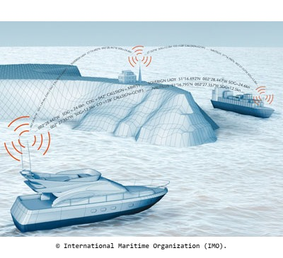
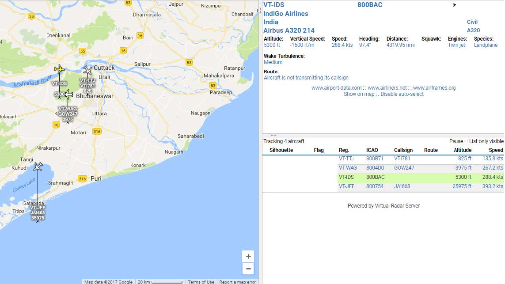

Inter IIT Tech Meet, 2018
Inter IIT Tech Meet is an annual event where all IITs come together to showcase their technological prowess and innovative spirit. This multidisciplinary competition spans various engineering domains, promoting healthy competition and knowledge exchange amongst the students. Participants engage in a range of challenges, from robotics and coding to design and entrepreneurship, fostering collaboration and skill enhancement. The event serves as a platform to address real-world problems and present cutting-edge solutions, contributing to India's technological advancement. We have taken the problem statement of creating a Safety Device for Fishing Vessels. We have finished the project eventually, but did not finish it on time to go present our solution at the Tech Meet. Regardless, it has served as a great learning platform for our team.
The shipping traffic in the India is observed to be steadily increasing with merchant ships transiting into the fishing zones to avoid the High-Risk Area. increasing ship traffic near the coast increases the risks faced by the fishermen. Presently, the ships and other vessels employ radars or visual detectors for detecting approaching vessels. But unfortunately, both systems fail in some instances which can lead to dangerous collisions. The radar signal reflected by small fishing vessels are sometimes not strong enough to come in the detection range, thus leading to collisions. Optical methods are limited to line of sight and the detection is affected by the fog, rain and other environmental factors. Active SONARs use powerful transmitters which are quite expensive, and it sends out high frequency acoustic signals which can affect marine life. The best option available at low cost is AIS.
 The Automatic Identification System (AIS) is a maritime tracking technology used for vessel identification and collision avoidance. It utilizes VHF radio frequencies to transmit and receive vessel information, including position, speed, and course. AIS enhances maritime safety by providing real-time data to ships and shore stations for effective navigation.AIS provides a lot of benefits in terms of traffic monitoring and vessel assistance. Ship owners and maritime authorities greatly rely on AIS to supplement information acquired from traditional radars for location tracking and is used to detect and avoid vessel collisions.
We have worked on ADS-B instead of AIS, to check the working of our code. AIS is used to track the positioning of ships. ADS-B is Aircraft
collision avoidance system and can be tested to track commercial airplanes. We have used RTL-SDR
to receive, decode and analyse radio signals in different frequencies. RTL-SDR is a very cheap software defined radio that uses a DVB-T TV
tuner dongle based on the RTL2832U chipset. Its affordability and versatility makes it a valuable tool for experimentation and learning.
The results and findings from our experiments are shown below:
